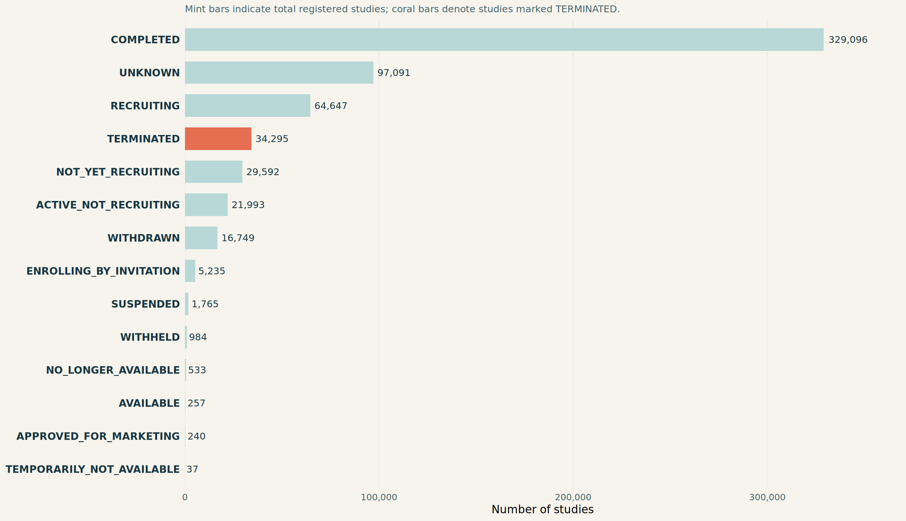
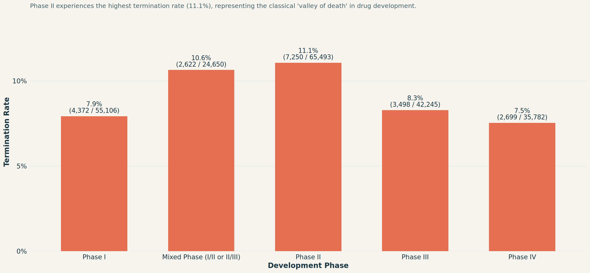
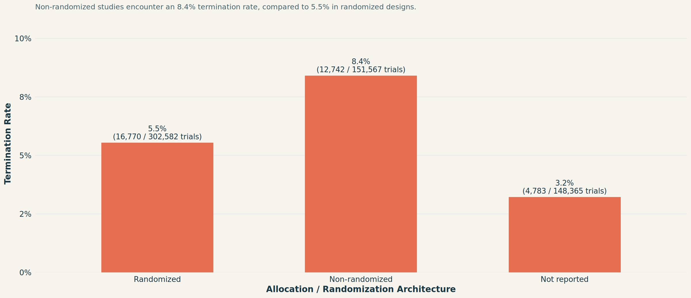
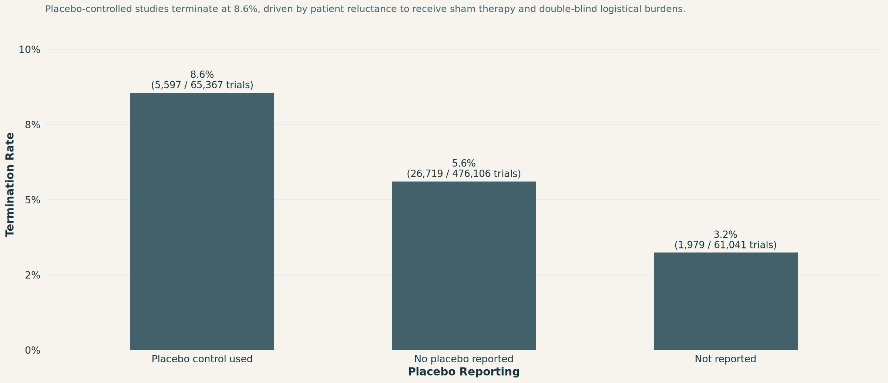
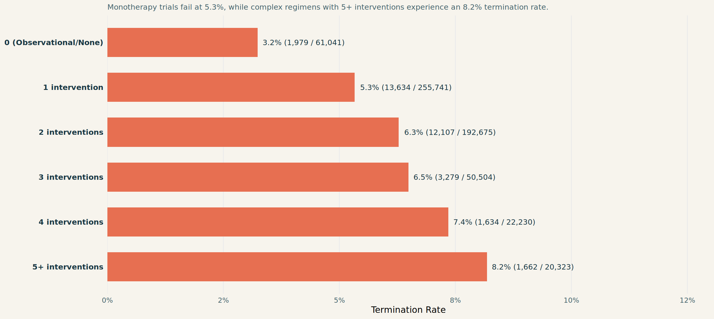
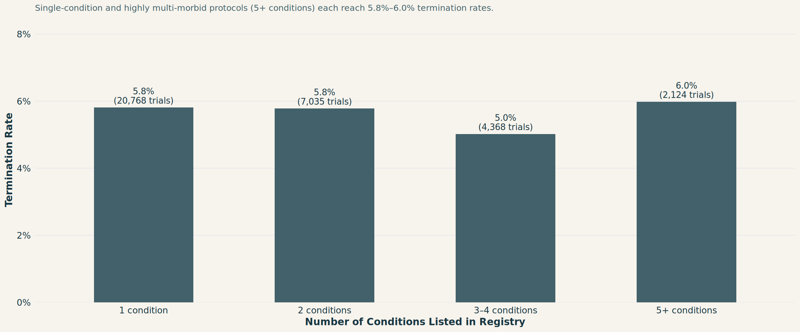
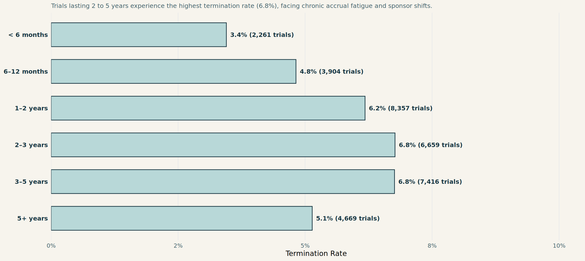
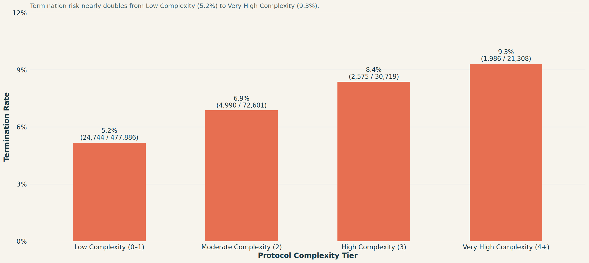
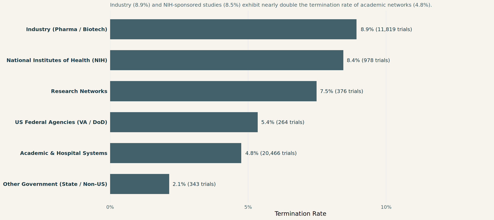
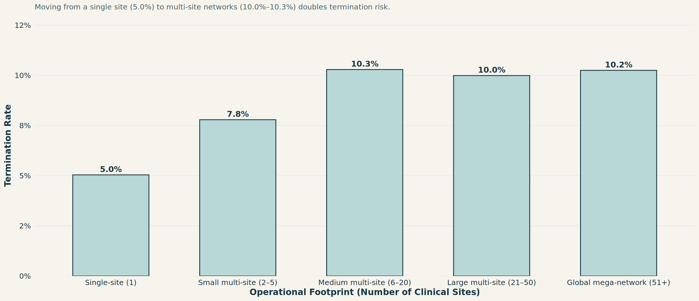

Variables to Consider and Possible Links to Failures in Clinical Trials
Empirical risk factors, complexity indicators, and early warning patterns observed across 602,514 studies.
1. Study Status & The Scope of Termination
Across the full registry of 602,514 studies, 34,295 are explicitly recorded as TERMINATED. The chart below contrasts total registered studies against those marked terminated across all primary status categories.
NoteUnderstanding Closed vs Active Statuses
While the baseline termination rate across all registered records is 5.7%, among closed, definitive trials (completed + terminated: 363,391 studies), the realized termination rate is 9.4%—approaching 1 in every 10 trials.
2. Trial Size Over Time: Interactive Panel of Histograms
Trial enrollment is one of the most critical structural constraints in clinical trial design. Under-recruitment directly leads to premature termination, while over-ambitious targets create severe operational drag.
The interactive histogram panel below reveals how planned participant cohorts are distributed across major research eras (1990–1999, 2000–2009, 2010–2019, and 2020–2026). Use the dropdown menu in the upper-left of the chart to inspect specific eras, or hover over bars to view exact trial counts and percentages.
3. Trial Phase: The Phase II Vulnerability Spike
Phase of development is one of the strongest predictive signals for trial termination. As drugs transition from preliminary safety to formal proof-of-concept testing, the failure rate sharply peaks.

4. Study Architecture: Randomization & Placebo Use
The design of a trial’s control mechanism directly impacts patient enrollment willingness, protocol compliance, and operational feasibility.
A. Randomization Status
Non-randomized interventional studies experience a significantly higher termination rate (8.4%) than randomized trials (5.5%), often reflecting single-arm exploratory designs that are vulnerable to early discontinuation.

B. Placebo Use
Placebo-controlled trials demand rigorous double-blinding, identical manufacturing of active and sham agents, and ethical consent for potential inactive treatment. Consequently, trials with reported placebo controls exhibit an 8.6% termination rate—more than 50% higher than trials without placebo controls (5.6%).

5. Protocol Scale: Interventions & Number of Conditions
A. Number of Interventions
As trials incorporate multiple drugs, combination therapies, or complex dosing arms, the termination hazard rises steadily. The data reveals a clear dose-response relationship between intervention count and study termination:

B. Number of Conditions Listed
Protocols targeting multiple comorbid conditions or broad diagnostic indications introduce diagnostic heterogeneity and patient subgroup stratification challenges:

6. Study Duration: The Attrition Timeline
How does elapsed study timeline correlate with termination? The chart below tracks termination rates across study duration brackets (from short studies under 6 months to multi-year longitudinal trials):

NoteThe 2–5 Year Vulnerability Window
Short studies (< 6 months) resolve quickly before major institutional or competitive shifts occur (3.4% failure). Studies extending into years 2 through 5 endure prolonged exposure to funding renewals, principal investigator relocations, and patient dropouts.
7. Protocol Complexity Score: Compounding Structural Risk
To capture the holistic operational burden of a clinical trial, we synthesized a Composite Study Complexity Score (0 to 5 points) incorporating: - Multi-arm design (\(\ge 3\) arms or \(\ge 3\) interventions) - Placebo control reporting - Blinded masking (double, triple, or quadruple) - Multi-site geographic footprint (\(\ge 6\) facilities) - Multi-endpoint burden (\(\ge 3\) primary outcomes)
Stratifying 602,514 studies by complexity score reveals a stark, linear escalation in failure risk:

8. Sponsor Type & Site Network Footprint
A. Lead Sponsor Category

B. Clinical Site Footprint
